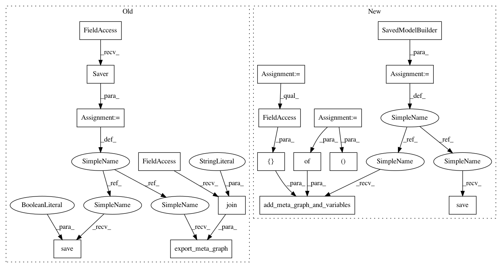

01ed847eea06300d278ffcf1214021b487d3d463,mnist/distributed/trainer/model.py,Model,export,#Model#Any#Any#,129
Before Change
sess.run(init_op)
trained_saver = tf.train.Saver()
trained_saver.restore(sess, last_checkpoint)
saver = tf.train.Saver()
saver.export_meta_graph(filename=os.path.join(output_dir, "export.meta"))
saver.save(
sess, os.path.join(output_dir, "export"), write_meta_graph=False)
def build_prediction_graph(self):
Builds prediction graph and registers appropriate endpoints.
examples = tf.placeholder(tf.string, shape=(None,))
After Change
logging.info("Exporting prediction graph to %s", output_dir)
with tf.Session(graph=tf.Graph()) as sess:
// Build and save prediction meta graph and trained variable values.
input_signatures, output_signatures = self.build_prediction_graph()
// Remove this if once Tensorflow 0.12 is standard.
try:
init_op = tf.global_variables_initializer()
except AttributeError:
init_op = tf.initialize_all_variables()
sess.run(init_op)
trained_saver = tf.train.Saver()
trained_saver.restore(sess, last_checkpoint)
predict_signature_def = signature_def_utils.build_signature_def(
input_signatures, output_signatures,
signature_constants.PREDICT_METHOD_NAME)
// Create a saver for writing SavedModel training checkpoints.
build = builder.SavedModelBuilder(
os.path.join(output_dir, "saved_model"))
build.add_meta_graph_and_variables(
sess, [tag_constants.SERVING],
signature_def_map={
signature_constants.DEFAULT_SERVING_SIGNATURE_DEF_KEY:
predict_signature_def
},
assets_collection=tf.get_collection(tf.GraphKeys.ASSET_FILEPATHS))
build.save()
def build_prediction_graph(self):
Builds prediction graph and registers appropriate endpoints.
examples = tf.placeholder(tf.string, shape=(None,))
In pattern: SUPERPATTERN
Frequency: 3
Non-data size: 17
Instances
Project Name: GoogleCloudPlatform/cloudml-samples
Commit Name: 01ed847eea06300d278ffcf1214021b487d3d463
Time: 2017-03-07
Author: elibixby@google.com
File Name: mnist/distributed/trainer/model.py
Class Name: Model
Method Name: export
Project Name: GoogleCloudPlatform/cloudml-samples
Commit Name: 01ed847eea06300d278ffcf1214021b487d3d463
Time: 2017-03-07
Author: elibixby@google.com
File Name: mnist/distributed/trainer/model.py
Class Name: Model
Method Name: export
Project Name: googledatalab/pydatalab
Commit Name: 15a86d278c6b0f8574cdd6e237f778faf2e002e1
Time: 2017-02-27
Author: qimingj@users.noreply.github.com
File Name: solutionbox/inception/datalab_solutions/inception/_model.py
Class Name: Model
Method Name: export
Project Name: GoogleCloudPlatform/cloudml-samples
Commit Name: 01ed847eea06300d278ffcf1214021b487d3d463
Time: 2017-03-07
Author: elibixby@google.com
File Name: flowers/trainer/model.py
Class Name: Model
Method Name: export